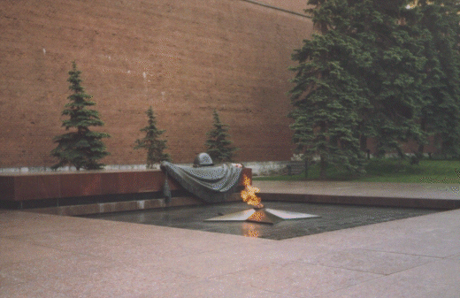

Detta är förmodligen den östligatse CAPS som nĺgonsin genomförts. Vi lärde vĺra vänner reglerna och sen blev det mycket ryskt öldrickande.

Urals Polytechnical University

Vi och tvĺ av vĺra värdar pĺ besök i Kreml. Kanonen är ett minne frĺn Napolenkrigen.

Strax väster om Jekaterinburg finns en sten som markerar gränsen mellan Europa och Asien.
Okände soldatens grav i Kreml.